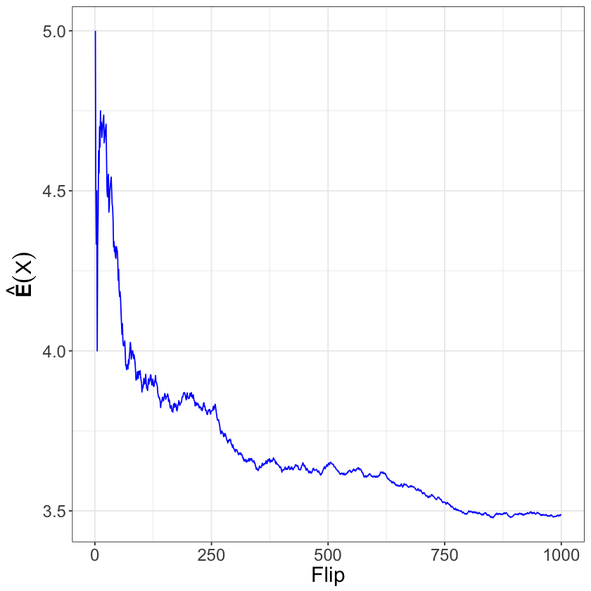

Distributions, Mean, and Variance
Random Variables
A random variable is a function from a set of all possible outcomes, named the sample space, to exactly one real number. We often assume that random variables follow named distributions, e.g. $Y \sim \text{Uniform}(a, b)$ where $a < b$, or $X \sim \text{Bernoulli}(p)$ where $p \in [0, 1]$. Named distributions are common because they often abstractly represent processes in the world worth measuring. Based on the outcome of the process of interest, we calculate probabilities for a random variable that follows a specific distribution.
The Uniform distribution represents well rolling die. Much of the probabilities surrounding gambling are found by assuming random variables follow various Uniform distributions. Ignoring payouts, roulette is essentially a random variable $X \sim \text{Uniform}(1, 36)$.
The Bernoulli distirbution represents well any process that has two mutually exclusive outcomes with a fixed probability of “success.” Anything from unfair coins to the outcomes of elections are modeled with Bernoulli random variables.
These are not the only random variables, nor are random variables restricted to countable outcomes. Discrete random variables are restrictued to countable outcomes and continous random variables are the extension to uncountable outcomes. Discrete random variables take on non-negative mass or probability at single points in the support of the random variable, and thus have probability mass functions. On the other hand, continuous random variables have probability density functions, since zero mass occurs at distinct points in the support of the random variable. These lecture notes will only use the name probability density functions, even when referring to discrete random variables.
Before providing a long list of some other common named distributions, we will discuss the mean and variance of a random variable. These quantities describe a measure of center and a measure of spread of random variables. Recall, statistics uses data to estimate population parameters. The mean and variance of a random variable are two of the more commonly estimated quantities that describe a population. With a data set in hand, the sample mean (add up all the data divide by the number of data points) is an approximation of the mean of a random variable. With a data set in hand, the measure of spread called the variance is an approximation of the variance of a random variable.
library(ggplot2)
Mean of a Random Variable
Think back to our discrete random variable that represented rolling a single fair die, $X \sim \text{Uniform}(1, 6)$. We formalized the mathematical notation $P(X \in {2,4,6}) = 1/2$ by imagining rolling the same fair die an infinite number of times and dividing the number of times either $2, 4$, or $6$ turns up by the total number of rolls. Next, we will formalize, in a similar notion, the idea of the mean of a random variable.
The expected value describes a measure of center of a random variable. This is related to but not exactly, the same thing as, the sample mean where you add up all the numbers and divide by how every many numbers there are. The expected value does not describe data. The expected value instead describes a measure of center of the probaility density function for a random variable.
For the discrete random variable $X \sim \text{Uniform}(1, 6)$ the probability density function is displayed below. More generally, as uniform implies sameness, mathematically the probability density function is the same for all arguments
for $x \in \{a, a+1, \ldots, b-1, b\}$. Notice that the random variable is only defined for integer values between $a$ and $b$ inclusive. These values make up the support of the random variable. Think of the support as the values for which the probability density function is positive.
x <- 1:6
fx <- 1 / (6 - 1 + 1)
df <- data.frame(x, fx)
ggplot(df, aes(x, fx)) + geom_point() + labs(y='uniform(x|1, 6)')

Example
Since population mean describes a measure of center, and the probability density function takes on the same value $1/6$ at each value in the support ${1, 2, 3, 4, 5, 6}$, the expected value must be the value in the middle of the support, namely $3.5$. Formally, we read $\mathbb{E}(X) = 3.5$ as the expected value of the random variable $X$ is $3.5$. As the sample mean is to data, the expected value is to a random variable.
More formally, the expected value of $X \sim \text{Uniform}(a, b)$ is
In R, we can apply this formula to $X \sim \text{Uniform}(1,6)$,
a <- 1; b <- 6
x <- a:b
fx <- 1 / (b - a + 1)
sum(x * fx) # E(X)
Notice that the we are simply weighting each value in the support of the random variable by the probability density function evaluated at each value in the support. The expected value is to be thought of as the value you’d get by taking the sample mean of the outcomes produced by infinitely rolling a fair die. Let’s approximate this process in R,
flips <- 1e3
die <- sample(1:6, flips, replace=TRUE)
df <- data.frame(m = cumsum(die)/(1:flips), Flip = 1:flips)
ggplot(df, aes(Flip, m)) + geom_line() + labs(y=expression(hat(bold(E))(X)), parse=TRUE)

DEFINITION. Let $X \sim F$, where $F$ is the name of a distribution. The expected value of a random variable is
The fancy integral here is just to remind you that for discrete random variables, the integral becomes a sum, as above, and for continuous random variables the integral stays. In both cases, the sum/integral ranges over the support of the random variable and the summand/integrand is the product of $x$ and the probability density function.
Variance and Standard Deviation of a Random Variable
Where the mean is a measure of center of a random variable, the variance is a measure of spread. Specifically, the variance measures squared distance from the mean, again weighted by the probability density function.
DEFINITION. Let $X \sim F$, where $F$ is the name of a distribution function with mean $\mu = \mathbb{E}(X)$, the variance of $X$ is
DEFINITION. Let $X \sim F$, where $F$ is the name of a distribution function with variance $\mathbb{V}(X)$, the standard deviation of $X$ is
The standard deviation is another measure of spread, like the variance, but the standard deviation is in the same units as the mean.
Example
In R, we can apply this formula to $X \sim \text{Uniform}(1,6)$ by first calculating the expected value $\mathbb{E}(X)$,
a <- 1; b <- 6
x <- a:b
fx <- 1 / (b - a + 1)
m <- sum(x * fx)
(v <- sum((x - m)^2 * fx)) # variance
sqrt(v) # standard deviation
It takes some time to understand the fancy integral notation above. There are a few ideas that you should keep in mind when working with the definitions of $\mathbb{E}(X)$ and $\mathbb{V}(X)$:
- if the random variable $X$ is discrete then the integral is really a sum,
- the summand/integrand is defined as the product of the function that shows up in front of $dF(x)$ times the probability density function of $X$, and
- the summand/integrand is evaluated at each value in the support of the random variable $X$.
Common Distributions
There are a few moving pieces to keep in mind while scanning or referencing the list of distributions below.
-
Each distribution presented is a generally accepted statistical abstraction of a common process in the world. Different sets of the real numbers $\mathbb{R}$ will support different real world processes. For instance, when measuring time until an event (Exponential), only positively valued real numbers are relevant. When measuring counting events (Poisson), only positive integers are relevant. This idea is known as the support of the probability density function. The support describes the set of possible values a random variable might take on.
-
The variables following the pipe in the function signature are generally referred to as parameters. For instance, $a$ and $b$ of the uniform distribution define the support of the random variable. For a discrete uniform random variable meant to describe the process of rolling a die, $a = 1$ and $b = 6$. These parameters constitue some, but not all, of the population parameters that are estimated from a sample. The parameter $\beta$ in the Exponential distribution describes the rate at which events occur in time or space.
-
These lecture notes focus on the likelihood function as a means to estimate population parameters from a sample. This method will work simply for any probability density function who’s support does not depend on the parameters. However, the maximum likelihood estimator for the uniform distribution will take more careful thought than it will direct application of calculus.
Discrete Distributions
Uniform
For $X \sim \text{Uniform}(a, b)$ where $a < b$, $X$ has probability density function
for $x \in \{a, a+1, \ldots, b - 1, b \}$.
Bernoulli
For $X \sim \text{Bernoulli}(p)$ where $p \in [0, 1]$, $X$ has probability density function
for $x \in \{0, 1\}$.
Geometric
For $X \sim \text{Geometric}(p)$ where $p \in [0, 1]$, $X$ has probability density function
for $x \in \{1, 2, \ldots \}$.
Binomial
For $X \sim \text{Binomial}(K, p)$ where $K \in \mathbb{N}
\{0\}$ and $p \in [0, 1]$, $X$ has probability density funciton
for $x \in \{0, 1, \ldots, K \}$.
Poisson
For $X \sim \text{Poisson}(\lambda)$ where $\lambda > 0$, $X$ has probability density function
for $x \in \mathbb{N}$.
Continuous Distributions
Uniform
For $X \sim \text{Uniform}(a, b)$ where $a < b$, $X$ has probability density function
for $x \in [a, b]$.
Beta
For $X \sim \text{Beta}(\alpha, \beta)$ where $\alpha > 0$ and $\beta > 0$, $X$ has probability density function
for $x \in [0, 1]$.
Exponential
For $X \sim \text{Exponential}(\beta)$ where $\beta > 0$, $X$ has probability density function
for $x \geq 0$.
Gamma
For $X \sim \text{Gamma}(\alpha, \beta)$ where $\alpha > 0$ and $\beta > 0$, $X$ has probability density function
for $x \geq 0$.
Normal
For $X \sim \text{Normal}(\mu, \sigma)$ where $\mu \in \mathbb{R}$ and $\sigma > 0$, $X$ has probability density function
for $x \in \mathbb{R}$.
Student-t
For $X \sim \text{StudentT}(\nu, \mu, \sigma)$ where $\nu > 0$, $\mu \in \mathbb{R}$, and $\sigma > 0$, $X$ has probability density function
for $x \in \mathbb{R}$.